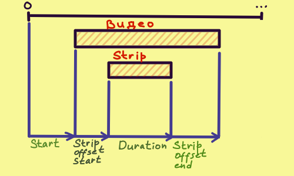
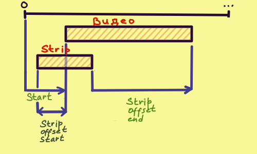

VideoEditing
Настраиваем рабочее пространство
Открываем workspace
В header:
> File | > New | ...
| Open... | Sculpting
| Open recent | VFX
| ... | > Video Editing
Через поиск:
Video Editing
Настройка Output - Format
Areas -> Properties | Tool | > Format
| Render | Frame Range
| > Output | Stereoscopy
| ... | ...
Настройка разрешения
- ResolutionX, ResolutionY
- % - уменьшит область рендера с сохранением пропорций. Обычного используется для тестового рендера
Настройка ФПС:
- Frame Rate - указываем FPS
Настройка Output - Frame Range
Areas -> Properties | Tool | Format
| Render | > Frame Range
| > Output | Stereoscopy
| ... | ...
Настройка временной области рендера:
- Frame Start, Frame End - начальный и конечный фрейм для рендера. Можно записать в стиле 10*24*60, Blender сам посчитает сколько это кадров
Настройка Output - Output
Areas -> Properties | Tool | ...
| Render | Stereoscopy
| > Output | > Output
| ... | ...
Настройка для output:
- Accept - путь к папке куда рендерим
- File Format - выбирай (FFmpegVideo), не обосрешся
- Color - выбор из (BW) черно-белое, и (RGB) цветное. Есть еще (RGBA), для активации нужно выбрать подходящий Video Codec
Areas -> Properties | Tool | ... | Color Management
| Render | Stereoscopy | > Encoding
| > Output | > Output | ----------------
| ... | ... |
Настройка codec:
- Continer - выбирай (MPEG-4), это база, не обосрешся
- Video Codec - (H.264) это база. (PNG), (QT rle/QT Animtion) поддерживает прозрачность
- Audio Codec - (AAC) это база
Стандартное редактирование видео
Добавить видео/картинку/аудио #1
Через проводник виндовс:
- открываем проводник
- тащим оттуда файлы
Добавить видео/картинку/аудио #2
Через пункт Add, в самом видео редакторе:
Areas -> Sequencer > Sequencer | /*Top Panel*/ | ... | ...
| > Add | > Movie
| Strip | > Sound
| ... | > Image/Sequence
| --------------
Добавить видео/картинку/аудио #3
Через FileBrowser:
Areas -> FileBrowser
Удобно, что можно видеть сразу на глубину до 3 уровней:
Areas -> FileBrowser | /*Top Panel*/ | ... | Columns
| > Display Settings | > Recursions
| Filter Settigns | SortBy
| ... | ----------
Удобно, что можно видеть недавние(Recent) и делать закладки(Bookmarks):
Areas -> FileBrowser | /*Left Panel*/
Приблизить/отдалить
В этом варианте надо тянуть мышку:
CTRL + MMouseButton + drag
Передвигать Strip
Выбери Strip и нажми:
g
Чтобы двигать в переделах канала(по X):
gx
Чтобы перемещать между каналами(по Y):
gy
Передвинуть начало strip на курсор
Устнавливаем курсор, выбираем strip, жмем:
Shift + s
Настройка перекрытия strip
Если переместить strip поверх другого стрипа, то он станет красным. Это и есть перекрытие
Оно есть в трех режимах:
- Shuffle - скользит влево/вправо пока не найдет достаточно места под себя
- Expand - сдвинет вправо мешающием strip'ы, освободит нужное пространство
- Overwrite - удалит то что под перемещаемым strip и вставит его туда
Настройка:
Areas -> Video Sequencer > Sequencer | /*Top Panel*/ | > /* Выпадающее меню в центре */
Удалить
Удалить strip:
x
Дублировать strip
Дублировать:
alt + d
Разрезать
Разрезать:
k
Жестко разрезать. Отличается от обычного разреза, что теряется связь с оригинальным видео... Короче муттирует данные:
shift + k
Настроить offset
По сути, ты когда загружаешь видео/звук/картинку, blender сохраняет ее в оперативке. И strip'ы всего лишь ссылки на эти данные. В итоге получается:
- data - видео
- strip - "окно" через которое мы видим видео
В зависимости от параметров Time, видны разные части видео. Найти их можно, выбрав нужный strip и зайдя в:
Areas -> Video Sequencer > Sequencer | /*Right Panel*/ | > Strip | ...
| Tool | > Time
| Modifiers | Source
| Proxy | ...

Сдвинуть offset. Сдвигает видео внутри strip
Можно сдвигать видимую часть видео внутри strip. Просто выбери strip и жмякни
s
Принцип работы основан на изменении сразу несколько параметров Time, что выглядит примерно так:

Сбросить offset
Можно сбросить почти все параметры offset, то есть снова видеть весь видос. Просто выбери strip и жмякни
alt + o
Уменьшаем тормознутость Preview
Дело в том, что пока ты редактируешь видео, оно обычно пипец как тормозит. Можно уменьшить число тормозов
Подготавливаем Proxy
Заходим:
Areas -> Video Sequencer > Sequencer
Выбираем видеодорожку. В том же Areas, в настройках дорожки(панель справа) заходим в Proxy и ставим галку в Strip Proxy & Timecode
Areas -> Video Sequencer > Sequencer | /*Right Panel*/ | Strip | > Strip Proxy & Timecode
| Tool |
| Modifiers |
| > Proxy |
В меню Strip Proxy & Timecode, настраиваем качество видео для preview:
- owerwrite - обновлять proxy или нет
- resolution - процент разрешения
- quality - качество видео
После нужно отрендерить Proxy. Для этого жмем:
Areas -> Video Sequencer > Sequencer | /*Right Panel*/ | Strip | > Rebuild Proxy & Timecode Indices
| Tool |
| Modifiers |
| > Proxy |
Выбираем отобржение Proxy в Preview
Заходим:
Areas -> Video Sequencer > Preview | /*Right Panel*/ | Tool | > View Settings
| > View | 2D Cursor
| Metadata | ...
Настраиваем отображение Proxy:
- Proxy Render Size - выбираем размер отрендеренного Proxy
- Use Proxy - ставим галочку, должна сработать какая-то оптимизация
Удобные штучки
Быстрая установка начала и конца Farme Range
Почти во всех Workspace'ах внизу есть Areas -> Timeline. Используй его чтобы установить начало и конец рендера по текущему Frame:
Areas -> Timeline | /*Top Panel*/ | > Payback | > Set Start Frame
| > Set End Frame
Отображение аудио-дорожек
Чтобы отобразить форму звуковой дорожки в Sequebcer надо зайти:
Areas -> Video Sequencer > Sequencer | /*Right Panel*/ | > Strip | > Sound
| Tool | Time
| Modifiers | Source
| Proxy | ...
Настраиваем отображение аудио-дорожки:
- Display Waveforn - ставим галочку
Marker(пометки)
Добавить Marker
Areas -> Video Sequencer > Sequencer | /*Top Panel*/ | View | > Add Marker
| Select | Duplcate marker
| > Marker | Duplicate Marker to Scene
| ... | ...
В той же менюшке можно:
- Rename Marker - переименовать маркер
- Jump to next/previous Marker - перейти к след/пред маркеру
- Lock Marker - залочить маркер чтобы не двигался
- Sync Marker - перемещает маркер вмесет с перемещением ЛЮБОЙ дорожки
Запись экрана в Windows
win + alt + r
Создание маски для видео
Открываем Areas для создания маски
Areas -> Movie Clip Editor | /*Top Panel*/ | Tracking |
| > Mask |
Открываем видео поверх которого рисуем маску
Areas -> Movie Clip Editor | /*Top Panel*/ | > Open |
Создаем новую маску
Areas -> Movie Clip Editor | /*Top Panel*/ | > New |
Рисуем маску:
- через аналог кривых Безье, для этого жмем CTRL + lmouse
- через SHIFT + A рисуем кругами и квадратами
Анимируем маску. По класике расставляем точки, выбираем фрейм, жмем I
Устанавливаем маску для видео
Сначало нужно создать маску
Открываем Areas для создания работы с видео
Areas -> Video Sequencer -> Sequencer
Добавляем(SHIFT + A) видео strip
Areas -> Video Sequencer > Sequencer | /*Top Panel*/ | ... | ... |
| Marker | Mask |
| > Add | > Movie |
| Strip | Sound |
| ... | ... |
Над видео(на слой выше) добавляем(SHIFT + A) Adjustment Layer
Areas -> Video Sequencer > Sequencer | /*Top Panel*/ | ... | ... |
| Marker | Text |
| > Add | > Adjustment Layer |
| Strip | Effect Strip |
| ... | ... |
Выбираем модификатор маски
Areas -> Video Sequencer > Sequencer | /*Right Panel*/ | Strip | > Modifiers | > Add Strip Modifier -> Mask |
| Tool |
| > Modifiers |
| Proxy |
Выбираем маску
Areas -> Video Sequencer > Sequencer | /*Right Panel*/ | > Mask | > Mask Input Type | Strip |
В открывшемся меню выбираем конкретную маску
Areas -> Video Sequencer > Sequencer | /*Right Panel*/ | Strip | > Mask | Mask Mask Input Type |
| Tool | | > Mask |
| > Modifiers | | Mask Time |
| Proxy |
Создаем эффект заблюренного лица
Сначало нужно создать маску
Потом устанавливаем маску
Выбираем подходящий метод наложения. Это нужно чтобы не дублировать видео
Areas -> Video Sequencer > Sequencer | /*Right Panel*/ | > Strip | > Compositing | > Blend -> Alpha Over |
| Tool | ... | Opacity |
| Modifiers |
| ... |
Над Adjustment Layer(на слой выше) добавляем(SHIFT + A) Gaussian Blur
Areas -> Video Sequencer > Sequencer | /*Top Panel*/ | ... | ... | ... |
| Marker | Text | Glow |
| > Add | Adjustment Layer | > Gaussian Blur |
| Strip | > Effect Strip | ------------- |
| ... | ... |
Настраиваем радиусы размытия для Gaussian Blur
Areas -> Video Sequencer > Sequencer | /*Right Panel*/ | > Strip | > Effect Strip |
| Tool | Compositing |
| Modifiers | ... |
| ... |
...